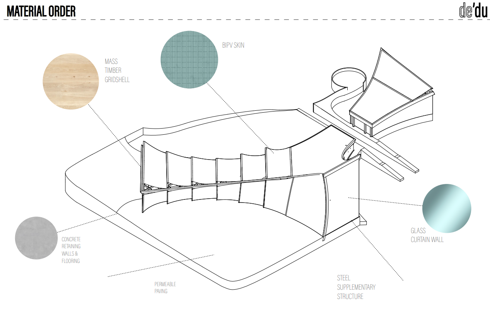

Design Process
Prince's design processes take into account the dichotomies of the materials used. For example, one of his projects utilizes a combination of hard and soft materials to balance sustainability and structural integrity. There is also his attention to flexible materials vs rigid materials to highlight their complementary roles, and attention to the interplay between organic wood textures and sharp, geometric lines of steel to create a visually striking contrast.